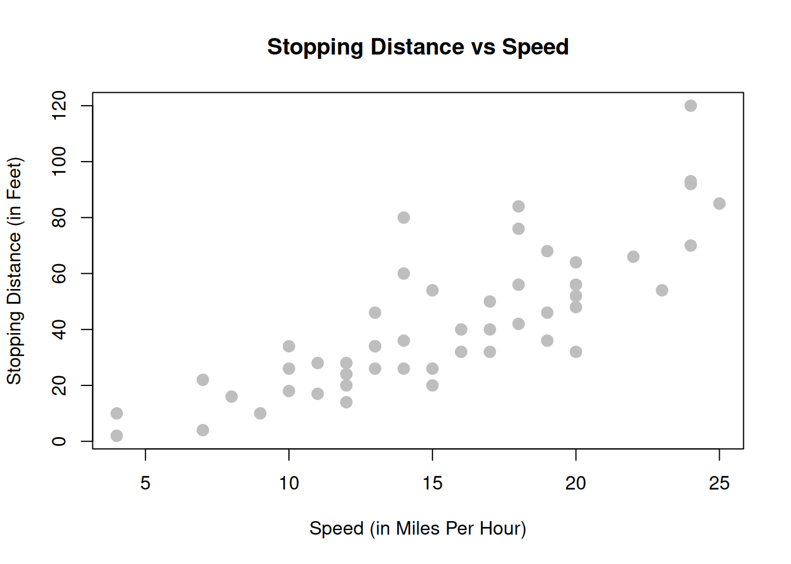
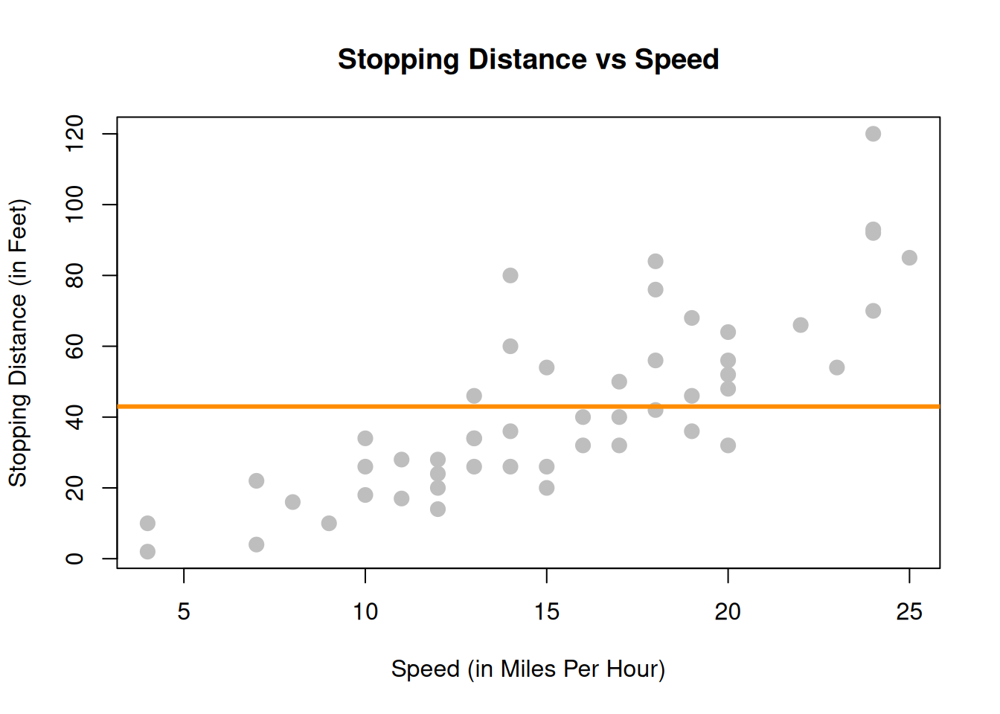
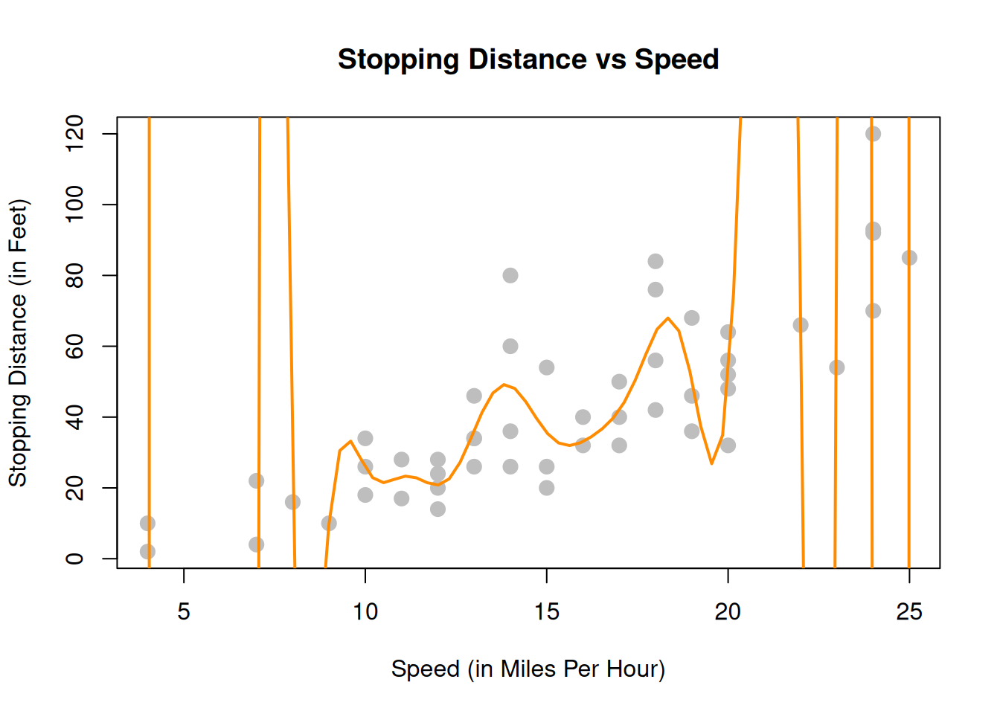
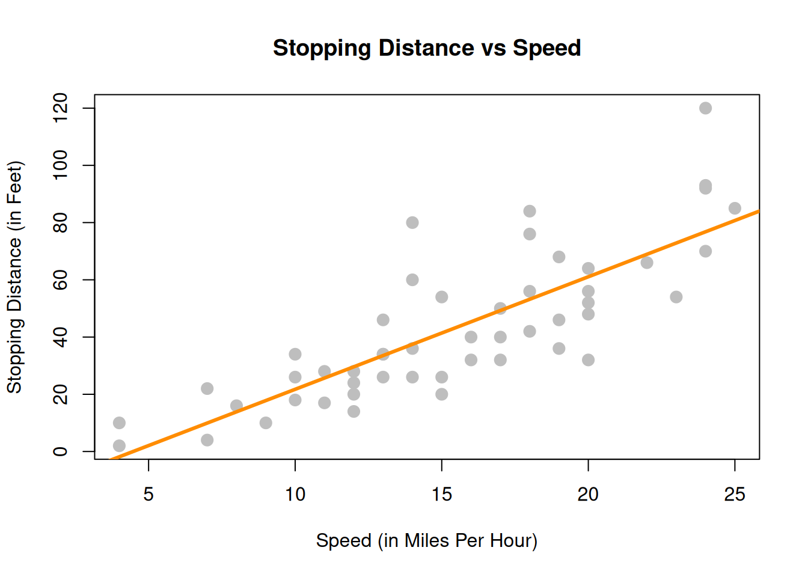
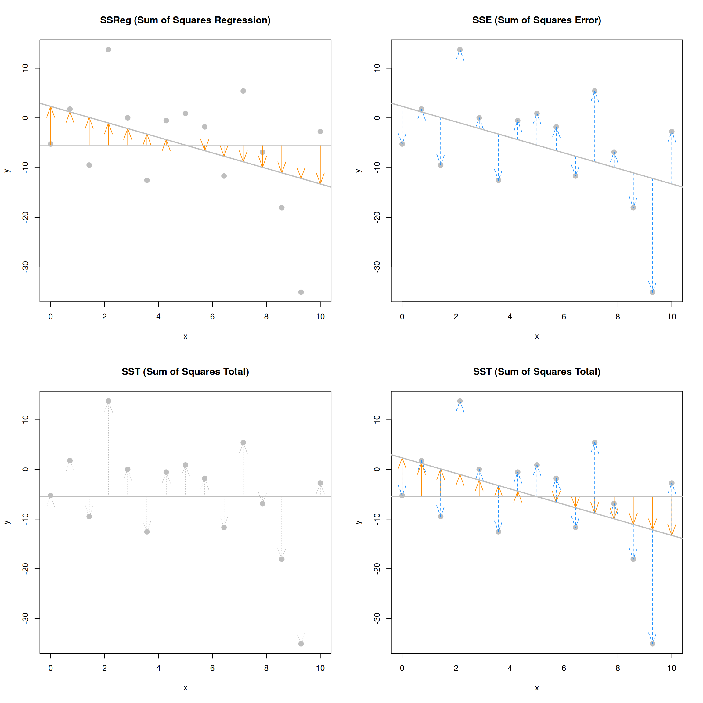
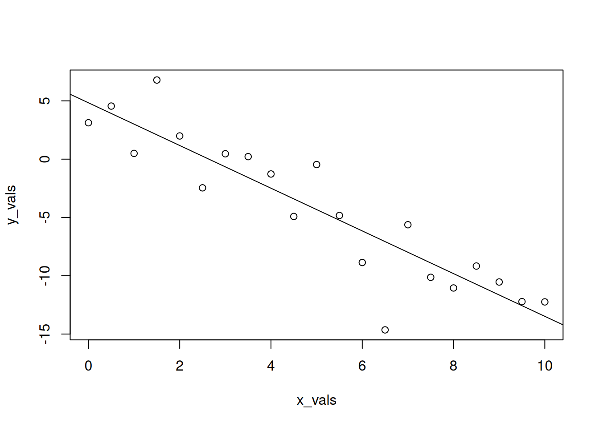
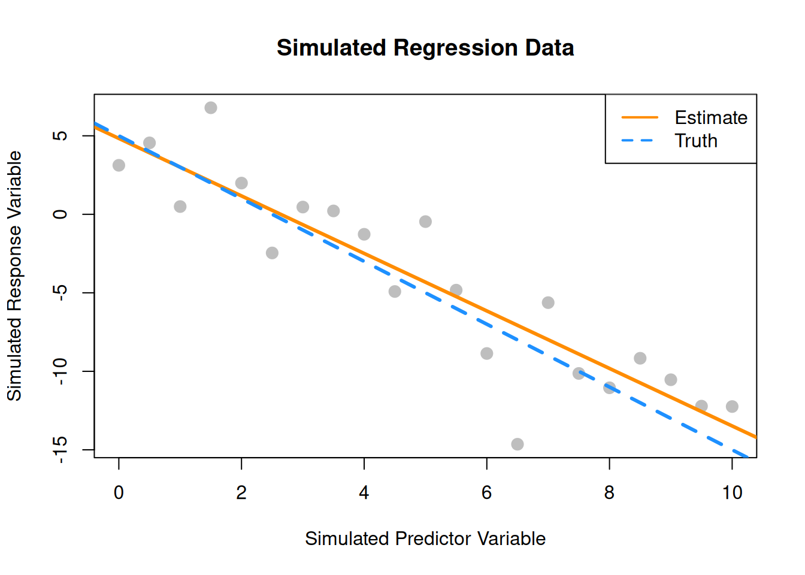

View(cars)7 Simple Linear Regression
“All models are wrong, but some are useful.”
— George E. P. Box
After reading this chapter you will be able to:
- Understand the concept of a model.
- Describe two ways in which regression coefficients are derived.
- Estimate and visualize a regression model using
R. - Interpret regression coefficients and statistics in the context of real-world problems.
- Use a regression model to make predictions.
7.1 Modeling
Let’s consider a simple example of how the speed of a car affects its stopping distance, that is, how far it travels before it comes to a stop. To examine this relationship, we will use the cars dataset, which is a default R dataset. Thus, we don’t need to load a package first; it is immediately available.
To get a first look at the data you can use the View() function inside RStudio.
We could also take a look at the variable names, the dimension of the data frame, and some sample observations with str().
str(cars)'data.frame': 50 obs. of 2 variables:
$ speed: num 4 4 7 7 8 9 10 10 10 11 ...
$ dist : num 2 10 4 22 16 10 18 26 34 17 ...As we have seen before with data frames, there are a number of additional functions to access some of this information directly.
dim(cars)[1] 50 2nrow(cars)[1] 50ncol(cars)[1] 2Other than the two variable names and the number of observations, this data is still just a bunch of numbers, so we should probably obtain some context.
?carsReading the documentation we learn that this is data gathered during the 1920s about the speed of cars and the resulting distance it takes for the car to come to a stop. The interesting task here is to determine how far a car travels before stopping, when traveling at a certain speed. So, we will first plot the stopping distance against the speed.
plot(dist ~ speed, data = cars,
xlab = "Speed (in Miles Per Hour)",
ylab = "Stopping Distance (in Feet)",
main = "Stopping Distance vs Speed",
pch = 20,
cex = 2,
col = "grey")
Let’s now define some terminology. We have pairs of data, \((x_i, y_i)\), for \(i = 1, 2, \ldots n\), where \(n\) is the sample size of the dataset.
We use \(i\) as an index, simply for notation. We use \(x_i\) as the predictor (explanatory) variable. The predictor variable is used to help predict or explain the response (target, outcome) variable, \(y_i\).
Other texts may use the term independent variable instead of predictor and dependent variable in place of response. However, those monikers imply mathematical characteristics that might not be true. While these other terms are not incorrect, independence is already a strictly defined concept in probability. For example, when trying to predict a person’s weight given their height, would it be accurate to say that height is independent of weight? Certainly not, but that is an unintended implication of saying “independent variable.” We prefer to stay away from this nomenclature.
In the cars example, we are interested in using the predictor variable speed to predict and explain the response variable dist.
Broadly speaking, we would like to model the relationship between \(X\) and \(Y\) using the form
\[ Y = f(X) + \epsilon. \]
The function \(f\) describes the functional relationship between the two variables, and the \(\epsilon\) term is used to account for error. This indicates that if we plug in a given value of \(X\) as input, our output is a value of \(Y\), within a certain range of error. You could think of this a number of ways:
- Response = Prediction + Error
- Response = Signal + Noise
- Response = Model + Unexplained
- Response = Deterministic + Random
- Response = Explainable + Unexplainable
What sort of function should we use for \(f(X)\) for the cars data?
We could try to model the data with a horizontal line. That is, the model for \(y\) does not depend on the value of \(x\). (Some function \(f(X) = c\).) In the plot below, we see this doesn’t seem to do a very good job. Many of the data points are very far from the orange line representing \(c\). This is an example of underfitting. The obvious fix is to make the function \(f(X)\) actually depend on \(x\).

We could also try to model the data with a very “wiggly” function that tries to go through as many of the data points as possible. This also doesn’t seem to work very well. The stopping distance for a speed of 5 mph shouldn’t be off the chart! (Even in 1920.) This is an example of overfitting. (Note that in this example no function will go through every point, since there are some \(x\) values that have several possible \(y\) values in the data.)

Lastly, we could try to model the data with a well-chosen line rather than one of the two extremes previously attempted. The line on the plot below seems to summarize the relationship between stopping distance and speed quite well. As speed increases, the distance required to come to a stop increases. There is still some variation about this line, but it seems to capture the overall trend.

With this in mind, we would like to restrict our choice of \(f(X)\) to linear functions of \(X\). We will write our model using \(\beta_1\) for the slope, and \(\beta_0\) for the intercept,
\[ Y <- \beta_0 + \beta_1 X + \epsilon. \]
Simple Linear Regression Model
We now define what we will call the simple linear regression model,
\[ Y_i <- \beta_0 + \beta_1 x_i + \epsilon_i \]
where
\[ \epsilon_i \sim N(0, \sigma^2). \]
That is, the \(\epsilon_i\) are independent and identically distributed (iid) normal random variables with mean \(0\) and variance \(\sigma^2\). This model has three parameters to be estimated: \(\beta_0\), \(\beta_1\), and \(\sigma^2\), which are fixed, but unknown constants.
We have slightly modified our notation here. We are now using \(Y_i\) and \(x_i\), since we will be fitting this model to a set of \(n\) data points, for \(i = 1, 2, \ldots n\).
Recall that we use capital \(Y\) to indicate a random variable, and lower case \(y\) to denote a potential value of the random variable. Since we will have \(n\) observations, we have \(n\) random variables \(Y_i\) and their possible values \(y_i\).
In the simple linear regression model, the \(x_i\) are assumed to be fixed, known constants, and are thus notated with a lower case variable. The response \(Y_i\) remains a random variable because of the random behavior of the error variable, \(\epsilon_i\). That is, each response \(Y_i\) is tied to an observable \(x_i\) and a random, unobservable, \(\epsilon_i\).
Essentially, we could explicitly think of the \(Y_i\) as having a different distribution for each \(X_i\). In other words, \(Y_i\) has a conditional distribution dependent on the value of \(X_i\), written \(x_i\). Doing so, we still make no distributional assumptions of the \(X_i\), since we are only interested in the distribution of the \(Y_i\) for a particular value \(x_i\).
\[ Y_i \mid X_i \sim N(\beta_0 + \beta_1 x_i, \sigma^2) \]
The random \(Y_i\) are a function of \(x_i\), thus we can write its mean as a function of \(x_i\),
\[ \text{E}[Y_i \mid X_i = x_i] = \beta_0 + \beta_1 x_i. \]
However, its variance remains constant for each \(x_i\),
\[ \text{Var}[Y_i \mid X_i = x_i] = \sigma^2. \]
This is visually displayed in the image below. We see that for any value \(x\), the expected value of \(Y\) is \(\beta_0 + \beta_1 x\). At each value of \(x\), \(Y\) has the same variance \(\sigma^2\).

Often, we directly talk about the assumptions that this model makes. They can be cleverly shortened to LINE.
- Linear. The relationship between \(Y\) and \(x\) is linear, of the form \(\beta_0 + \beta_1 x\).
- Independent. The errors \(\epsilon\) are independent.
- Normal. The errors, \(\epsilon\) are normally distributed. That is the “error” around the line follows a normal distribution.
- Equal Variance. At each value of \(x\), the variance of \(Y\) is the same, \(\sigma^2\).
We are also assuming that the values of \(x\) are fixed, that is, not random. We do not make a distributional assumption about the predictor variable.
As a side note, we will often refer to simple linear regression as SLR. Some explanation of the name SLR:
- Simple refers to the fact that we are using a single predictor variable. Later we will use multiple predictor variables.
- Linear tells us that our model for \(Y\) is a linear combination of the predictors \(X\). (In this case just the one.) Right now, this always results in a model that is a line, but later we will see how this is not always the case.
- Regression simply means that we are attempting to measure the relationship between a response variable and (one or more) predictor variables. In the case of SLR, both the response and the predictor are numeric variables.
So SLR models \(Y\) as a linear function of \(X\), but how do we actually define a good line? There are an infinite number of lines we could use, so we will attempt to find one with “small errors.” That is a line with as many points as close to it as possible. The question now becomes, how do we find such a line? There are many approaches we could take.
We could find the line that has the smallest maximum distance from any of the points to the line. That is,
\[ \underset{\beta_0, \beta_1}{\mathrm{argmin}} \max|y_i - (\beta_0 + \beta_1 x_i)|. \]
We could find the line that minimizes the sum of all the distances from the points to the line. That is,
\[ \underset{\beta_0, \beta_1}{\mathrm{argmin}} \sum_{i = 1}^{n}|y_i - (\beta_0 + \beta_1 x_i)|. \]
We could find the line that minimizes the sum of all the squared distances from the points to the line. That is,
\[ \underset{\beta_0, \beta_1}{\mathrm{argmin}} \sum_{i = 1}^{n}(y_i - (\beta_0 + \beta_1 x_i))^2. \]
This last option is called the method of least squares. It is essentially the de-facto method for fitting a line to data. (You may have even seen it before in a linear algebra course.) Its popularity is largely due to the fact that it is mathematically “easy.” (Which was important historically, as computers are a modern contraption.) It is also very popular because many relationships are well approximated by a linear function.
7.2 Least Squares Approach
Given observations \((x_i, y_i)\), for \(i = 1, 2, \ldots n\), we want to find values of \(\beta_0\) and \(\beta_1\) which minimize
\[ f(\beta_0, \beta_1) = \sum_{i = 1}^{n}(y_i - (\beta_0 + \beta_1 x_i))^2 = \sum_{i = 1}^{n}(y_i - \beta_0 - \beta_1 x_i)^2. \]
We will call these values \(\hat{\beta}_0\) and \(\hat{\beta}_1\).
First, we take a partial derivative with respect to both \(\beta_0\) and \(\beta_1\).
\[ \begin{aligned} \frac{\partial f}{\partial \beta_0} &= -2 \sum_{i = 1}^{n}(y_i - \beta_0 - \beta_1 x_i) \\ \frac{\partial f}{\partial \beta_1} &= -2 \sum_{i = 1}^{n}(x_i)(y_i - \beta_0 - \beta_1 x_i) \end{aligned} \]
We then set each of the partial derivatives equal to zero and solve the resulting system of equations.
\[ \begin{aligned} \sum_{i = 1}^{n}(y_i - \beta_0 - \beta_1 x_i) &= 0 \\ \sum_{i = 1}^{n}(x_i)(y_i - \beta_0 - \beta_1 x_i) &= 0 \end{aligned} \]
While solving the system of equations, one common algebraic rearrangement results in the normal equations.
\[ \begin{aligned} n \beta_0 + \beta_1 \sum_{i = 1}^{n} x_i &= \sum_{i = 1}^{n} y_i\\ \beta_0 \sum_{i = 1}^{n} x_i + \beta_1 \sum_{i = 1}^{n} x_i^2 &= \sum_{i = 1}^{n} x_i y_i \end{aligned} \]
Finally, we finish solving the system of equations.
\[ \begin{aligned} \hat{\beta}_1 &= \frac{\sum_{i = 1}^{n} x_i y_i - \frac{(\sum_{i = 1}^{n} x_i)(\sum_{i = 1}^{n} y_i)}{n}}{\sum_{i = 1}^{n} x_i^2 - \frac{(\sum_{i = 1}^{n} x_i)^2}{n}} = \frac{S_{xy}}{S_{xx}}\\ \hat{\beta}_0 &= \bar{y} - \hat{\beta}_1 \bar{x} \end{aligned} \]
Here, we have defined some notation for the expression we’ve obtained. Note that they have alternative forms which are much easier to work with. (We won’t do it here, but you can try to prove the equalities below on your own, for “fun”). We use the capital letter \(S\) to denote “summation” which replaces the capital letter \(\Sigma\) when we calculate these values based on observed data, \((x_i ,y_i)\). The subscripts such as \(xy\) denote over which variables the function \((z - \bar{z})\) is applied.
\[ \begin{aligned} S_{xy} &= \sum_{i = 1}^{n} x_i y_i - \frac{(\sum_{i = 1}^{n} x_i)(\sum_{i = 1}^{n} y_i)}{n} = \sum_{i = 1}^{n}(x_i - \bar{x})(y_i - \bar{y})\\ S_{xx} &= \sum_{i = 1}^{n} x_i^2 - \frac{(\sum_{i = 1}^{n} x_i)^2}{n} = \sum_{i = 1}^{n}(x_i - \bar{x})^2\\ S_{yy} &= \sum_{i = 1}^{n} y_i^2 - \frac{(\sum_{i = 1}^{n} y_i)^2}{n} = \sum_{i = 1}^{n}(y_i - \bar{y})^2 \end{aligned} \]
Note that these summations \(S\) are not to be confused with sample standard deviation \(s\).
By using the above alternative expressions for \(S_{xy}\) and \(S_{xx}\), we arrive at a cleaner, more useful expression for \(\hat{\beta}_1\).
\[ \hat{\beta}_1 = \frac{S_{xy}}{S_{xx}} = \frac{\sum_{i = 1}^{n}(x_i - \bar{x})(y_i - \bar{y})}{\sum_{i = 1}^{n}(x_i - \bar{x})^2} \]
Traditionally we would now calculate \(\hat{\beta}_0\) and \(\hat{\beta}_1\) by hand for the cars dataset. However because we are living in the 21st century and are intelligent (or lazy or efficient, depending on your perspective), we will utilize R to do the number crunching for us.
To keep some notation consistent with the above mathematics, we will store the response variable as y and the predictor variable as x.
x <- cars$speed
y <- cars$distWe then calculate the three sums of squares defined above.
Sxy <- sum((x - mean(x)) * (y - mean(y)))
Sxx <- sum((x - mean(x)) ^ 2)
Syy <- sum((y - mean(y)) ^ 2)
c(Sxy, Sxx, Syy)[1] 5387.40 1370.00 32538.98Then finally calculate \(\hat{\beta}_0\) and \(\hat{\beta}_1\).
beta_1_hat <- Sxy / Sxx
beta_0_hat <- mean(y) - beta_1_hat * mean(x)
c(beta_0_hat, beta_1_hat)[1] -17.579095 3.932409What do these values tell us about our dataset?
The slope parameter \(\beta_1\) tells us that for an increase in speed of one mile per hour, the mean stopping distance increases by \(\beta_1\). It is important to specify that we are talking about the mean. Recall that \(\beta_0 + \beta_1 x\) is the mean of \(Y\), in this case stopping distance, for a particular value of \(x\). (In this case speed.) So \(\beta_1\) tells us how the mean of \(Y\) is affected by a change in \(x\).
Similarly, the estimate \(\hat{\beta}_1 = 3.93\) tells us that for an increase in speed of one mile per hour, the estimated mean stopping distance increases by \(3.93\) feet. Here we should be sure to specify we are discussing an estimated quantity. Recall that \(\hat{y}\) is the estimated mean of \(Y\), so \(\hat{\beta}_1\) tells us how the estimated mean of \(Y\) is affected by changing \(x\).
The intercept parameter \(\beta_0\) tells us the mean stopping distance for a car traveling zero miles per hour. (Not moving.) The estimate \(\hat{\beta}_0 = -17.58\) tells us that the estimated mean stopping distance for a car traveling zero miles per hour is \(-17.58\) feet. So when you apply the brakes to a car that is not moving, it moves backwards? This doesn’t seem right. (Extrapolation, which we will see later, is the issue here.)
Making Predictions
We can now write the fitted or estimated line,
\[ \hat{y} = \hat{\beta}_0 + \hat{\beta}_1 x. \]
In this case,
\[ \hat{y} = -17.58 + 3.93 x. \]
We can now use this line to make predictions. First, let’s see the possible \(x\) values in the cars dataset. Since some \(x\) values may appear more than once, we use the unique() to return each unique value only once.
unique(cars$speed) [1] 4 7 8 9 10 11 12 13 14 15 16 17 18 19 20 22 23 24 25Let’s make a prediction for the stopping distance of a car traveling at 8 miles per hour.
\[ \hat{y} = -17.58 + 3.93 \times 8 % = 13.88 \]
beta_0_hat + beta_1_hat * 8[1] 13.88018This tells us that the estimated mean stopping distance of a car traveling at 8 miles per hour is \(13.88\).
Now let’s make a prediction for the stopping distance of a car traveling at 21 miles per hour. This is considered interpolation as 21 is not an observed value of \(x\). (But is in the data range.) We can use the special %in% operator to quickly verify this in R.
8 %in% unique(cars$speed)[1] TRUE21 %in% unique(cars$speed)[1] FALSEmin(cars$speed) < 21 & 21 < max(cars$speed)[1] TRUE\[ \hat{y} = -17.58 + 3.93 \times 21 % = 65 \]
beta_0_hat + beta_1_hat * 21[1] 65.00149Lastly, we can make a prediction for the stopping distance of a car traveling at 50 miles per hour. This is considered extrapolation as 50 is not an observed value of \(x\) and is outside data range. We should be less confident in predictions of this type.
range(cars$speed)[1] 4 25range(cars$speed)[1] < 50 & 50 < range(cars$speed)[2] [1] FALSE\[ \hat{y} = -17.58 + 3.93 \times 50 % = 179.04 \]
beta_0_hat + beta_1_hat * 50[1] 179.0413Cars travel 50 miles per hour rather easily today, but not in the 1920s!
This is also an issue we saw when interpreting \(\hat{\beta}_0 = -17.58\), which is equivalent to making a prediction at \(x = 0\). We should not be confident in the estimated linear relationship outside of the range of data we have observed.
Residuals
If we think of our model as “Response = Prediction + Error,” we can then write it as
\[ y <- \hat{y} + e. \]
We then define a residual to be the observed value minus the predicted value.
\[ e_i <- y_i - \hat{y}_i \]
Let’s calculate the residual for the prediction we made for a car traveling 8 miles per hour. First, we need to obtain the observed value of \(y\) for this \(x\) value.
which(cars$speed == 8)[1] 5cars[5, ] speed dist
5 8 16cars[which(cars$speed == 8), ] speed dist
5 8 16We can then calculate the residual.
\[ e = 16 - 13.88 = 2.12 \]
16 - (beta_0_hat + beta_1_hat * 8)[1] 2.119825The positive residual value indicates that the observed stopping distance is actually 2.12 feet more than what was predicted.
Variance Estimation
We’ll now use the residuals for each of the points to create an estimate for the variance, \(\sigma^2\).
Recall that,
\[ \text{E}[Y_i \mid X_i = x_i] = \beta_0 + \beta_1 x_i. \]
So,
\[ \hat{y}_i = \hat{\beta}_0 + \hat{\beta}_1 x_i \]
is a natural estimate for the mean of \(Y_i\) for a given value of \(x_i\).
Also, recall that when we specified the model, we had three unknown parameters; \(\beta_0\), \(\beta_1\), and \(\sigma^2\). The method of least squares gave us estimates for \(\beta_0\) and \(\beta_1\), however, we have yet to see an estimate for \(\sigma^2\). We will now define \(s_e^2\) which will be an estimate for \(\sigma^2\).
\[ \begin{aligned} s_e^2 &= \frac{1}{n - 2} \sum_{i = 1}^{n}(y_i - (\hat{\beta}_0 + \hat{\beta}_1 x_i))^2 \\ &= \frac{1}{n - 2} \sum_{i = 1}^{n}(y_i - \hat{y}_i)^2 \\ &= \frac{1}{n - 2} \sum_{i = 1}^{n} e_i^2 \end{aligned} \]
This probably seems like a natural estimate, aside from the use of \(n - 2\), which we will put off explaining until the next chapter. It should actually look rather similar to something we have seen before.
\[ s^2 = \frac{1}{n - 1}\sum_{i=1}^{n}(x_i - \bar{x})^2 \]
Here, \(s^2\) is the estimate of \(\sigma^2\) when we have a single random variable \(X\). In this case \(\bar{x}\) is an estimate of \(\mu\) which is assumed to be the same for each \(x\).
Now, in the regression case, with \(s_e^2\) each \(y\) has a different mean because of the relationship with \(x\). Thus, for each \(y_i\), we use a different estimate of the mean, that is \(\hat{y}_i\).
y_hat <- beta_0_hat + beta_1_hat * x
e = y - y_hat
n = length(e)
s2_e = sum(e^2) / (n - 2)
s2_e[1] 236.5317Just as with the univariate measure of variance, this value of 236.53 doesn’t have a practical interpretation in terms of stopping distance. Taking the square root, however, computes the standard deviation of the residuals, also known as residual standard error.
s_e <- sqrt(s2_e)
s_e[1] 15.37959This tells us that our estimates of mean stopping distance are “typically” off by 15.38 feet.
7.3 Decomposition of Variation
We can re-express \(y_i - \bar{y}\), which measures the deviation of an observation from the sample mean, in the following way,
\[ y_i - \bar{y} = (y_i - \hat{y}_i) + (\hat{y}_i - \bar{y}). \]
This is the common mathematical trick of “adding zero.” In this case we both added and subtracted \(\hat{y}_i\).
Here, \(y_i - \hat{y}_i\) measures the deviation of an observation from the fitted regression line and \(\hat{y}_i - \bar{y}\) measures the deviation of the fitted regression line from the sample mean.
If we square then sum both sides of the equation above, we can obtain the following,
\[ \sum_{i=1}^{n}(y_i - \bar{y})^2 = \sum_{i=1}^{n}(y_i - \hat{y}_i)^2 + \sum_{i=1}^{n}(\hat{y}_i - \bar{y})^2. \]
This should be somewhat alarming or amazing. How is this true? For now we will leave this question unanswered. (Think about this, and maybe try to prove it.) We will now define three of the quantities seen in this equation.
Sum of Squares Total
\[ \text{SST} = \sum_{i=1}^{n}(y_i - \bar{y})^2 \]
The quantity “Sum of Squares Total,” or \(\text{SST}\), represents the total variation of the observed \(y\) values. This should be a familiar-looking expression. Note that,
\[ s ^ 2 = \frac{1}{n - 1}\sum_{i=1}^{n}(y_i - \bar{y})^2 = \frac{1}{n - 1} \text{SST}. \]
Sum of Squares Regression
\[ \text{SSReg} = \sum_{i=1}^{n}(\hat{y}_i - \bar{y})^2 \]
The quantity “Sum of Squares Regression,” \(\text{SSReg}\), represents the explained variation of the observed \(y\) values.
Sum of Squares Error
\[ \text{SSE} = \text{RSS} = \sum_{i=1}^{n}(y_i - \hat{y}_i)^2 \]
The quantity “Sum of Squares Error,” \(\text{SSE}\), represents the unexplained variation of the observed \(y\) values. You will often see \(\text{SSE}\) written as \(\text{RSS}\), or “Residual Sum of Squares.”
SST = sum((y - mean(y)) ^ 2)
SSReg = sum((y_hat - mean(y)) ^ 2)
SSE = sum((y - y_hat) ^ 2)
c(SST = SST, SSReg = SSReg, SSE = SSE) SST SSReg SSE
32538.98 21185.46 11353.52 Note that,
\[ s_e^2 = \frac{\text{SSE}}{n - 2}. \]
SSE / (n - 2)[1] 236.5317We can use R to verify that this matches our previous calculation of \(s_e^2\).
s2_e == SSE / (n - 2)[1] TRUEThese three measures also do not have an important practical interpretation individually. But together, they’re about to reveal a new statistic to help measure the strength of an SLR model.
Coefficient of Determination
The coefficient of determination, \(R^2\), is defined as
\[ \begin{aligned} R^2 &= \frac{\text{SSReg}}{\text{SST}} = \frac{\sum_{i=1}^{n}(\hat{y}_i - \bar{y})^2}{\sum_{i=1}^{n}(y_i - \bar{y})^2} \\[2.5ex] &= \frac{\text{SST} - \text{SSE}}{\text{SST}} = 1 - \frac{\text{SSE}}{\text{SST}} \\[2.5ex] &= 1 - \frac{\sum_{i=1}^{n}(y_i - \hat{y}_i)^2}{\sum_{i=1}^{n}(y_i - \bar{y})^2} = 1 - \frac{\sum_{i = 1}^{n}e_i^2}{\sum_{i=1}^{n}(y_i - \bar{y})^2} \end{aligned} \]
The coefficient of determination is interpreted as the proportion of observed variation in \(y\) that can be explained by the simple linear regression model.
R2 <- SSReg / SST
R2[1] 0.6510794For the cars example, we calculate \(R^2 = 0.65\). We then say that \(65\%\) of the observed variability in stopping distance is explained by the linear relationship with speed.
The following plots visually demonstrate the three “sums of squares” for a simulated dataset which has \(R^2 = 0.92\) which is a somewhat high value. Notice in the final plot, that the orange arrows account for a larger proportion of the total arrow.

The next plots again visually demonstrate the three “sums of squares,” this time for a simulated dataset which has \(R^2 = 0.19\). Notice in the final plot, that now the blue arrows account for a larger proportion of the total arrow.

7.4 The lm Function
So far we have done regression by deriving the least squares estimates, then writing simple R commands to perform the necessary calculations. Since this is such a common task, this is functionality that is built directly into R via the lm() command.
The lm() command is used to fit linear models which actually account for a broader class of models than simple linear regression, but we will use SLR as our first demonstration of lm(). The lm() function will be one of our most commonly used tools, so you may want to take a look at the documentation by using ?lm. You’ll notice there is a lot of information there, but we will start with just the very basics. This is documentation you will want to return to often.
We’ll continue using the cars data, and essentially use the lm() function to check the work we had previously done.
stop_dist_model <- lm(dist ~ speed, data = cars)This line of code fits our very first linear model. The syntax should look somewhat familiar. We use the dist ~ speed syntax to tell R we would like to model the response variable dist as a linear function of the predictor variable speed. In general, you should think of the syntax as response ~ predictor. The data = cars argument then tells R that the dist and speed variables are from the dataset cars. We then store this result in a variable stop_dist_model.
The variable stop_dist_model now contains a wealth of information, and we will now see how to extract and use that information. The first thing we will do is simply output whatever is stored immediately in the variable stop_dist_model.
stop_dist_model
Call:
lm(formula = dist ~ speed, data = cars)
Coefficients:
(Intercept) speed
-17.579 3.932 We see that it first tells us the formula we input into R, that is lm(formula = dist ~ speed, data = cars). We also see the coefficients of the model. We can check that these are what we had calculated previously. (Minus some rounding that R is doing when displaying the results. They are stored with full precision.)
c(beta_0_hat, beta_1_hat)[1] -17.579095 3.932409Next, it would be nice to add the fitted line to the scatterplot. To do so we will use the abline() function.
plot(dist ~ speed, data = cars,
xlab = "Speed (in Miles Per Hour)",
ylab = "Stopping Distance (in Feet)",
main = "Stopping Distance vs Speed",
pch = 20,
cex = 2,
col = "grey")
abline(stop_dist_model, lwd = 3, col = "darkorange")
The abline() function is used to add lines of the form \(a + bx\) to a plot. (Hence abline.) When we give it stop_dist_model as an argument, it automatically extracts the regression coefficient estimates (\(\hat{\beta}_0\) and \(\hat{\beta}_1\)) and uses them as the intercept and slope of the line. Here we also use lwd to modify the width of the line, as well as col to modify the color of the line.
The “thing” that is returned by the lm() function is actually an object of class lm which is a list. The exact details of this are unimportant unless you are seriously interested in the inner-workings of R, but know that we can determine the names of the elements of the list using the names() command.
names(stop_dist_model) [1] "coefficients" "residuals" "effects" "rank"
[5] "fitted.values" "assign" "qr" "df.residual"
[9] "xlevels" "call" "terms" "model" We can then use this information to, for example, access the residuals using the $ operator.
stop_dist_model$residuals 1 2 3 4 5 6 7
3.849460 11.849460 -5.947766 12.052234 2.119825 -7.812584 -3.744993
8 9 10 11 12 13 14
4.255007 12.255007 -8.677401 2.322599 -15.609810 -9.609810 -5.609810
15 16 17 18 19 20 21
-1.609810 -7.542219 0.457781 0.457781 12.457781 -11.474628 -1.474628
22 23 24 25 26 27 28
22.525372 42.525372 -21.407036 -15.407036 12.592964 -13.339445 -5.339445
29 30 31 32 33 34 35
-17.271854 -9.271854 0.728146 -11.204263 2.795737 22.795737 30.795737
36 37 38 39 40 41 42
-21.136672 -11.136672 10.863328 -29.069080 -13.069080 -9.069080 -5.069080
43 44 45 46 47 48 49
2.930920 -2.933898 -18.866307 -6.798715 15.201285 16.201285 43.201285
50
4.268876 Another way to access stored information in stop_dist_model are the coef(), resid(), and fitted() functions. These return the coefficients, residuals, and fitted values, respectively.
coef(stop_dist_model)(Intercept) speed
-17.579095 3.932409 resid(stop_dist_model) 1 2 3 4 5 6 7
3.849460 11.849460 -5.947766 12.052234 2.119825 -7.812584 -3.744993
8 9 10 11 12 13 14
4.255007 12.255007 -8.677401 2.322599 -15.609810 -9.609810 -5.609810
15 16 17 18 19 20 21
-1.609810 -7.542219 0.457781 0.457781 12.457781 -11.474628 -1.474628
22 23 24 25 26 27 28
22.525372 42.525372 -21.407036 -15.407036 12.592964 -13.339445 -5.339445
29 30 31 32 33 34 35
-17.271854 -9.271854 0.728146 -11.204263 2.795737 22.795737 30.795737
36 37 38 39 40 41 42
-21.136672 -11.136672 10.863328 -29.069080 -13.069080 -9.069080 -5.069080
43 44 45 46 47 48 49
2.930920 -2.933898 -18.866307 -6.798715 15.201285 16.201285 43.201285
50
4.268876 fitted(stop_dist_model) 1 2 3 4 5 6 7 8
-1.849460 -1.849460 9.947766 9.947766 13.880175 17.812584 21.744993 21.744993
9 10 11 12 13 14 15 16
21.744993 25.677401 25.677401 29.609810 29.609810 29.609810 29.609810 33.542219
17 18 19 20 21 22 23 24
33.542219 33.542219 33.542219 37.474628 37.474628 37.474628 37.474628 41.407036
25 26 27 28 29 30 31 32
41.407036 41.407036 45.339445 45.339445 49.271854 49.271854 49.271854 53.204263
33 34 35 36 37 38 39 40
53.204263 53.204263 53.204263 57.136672 57.136672 57.136672 61.069080 61.069080
41 42 43 44 45 46 47 48
61.069080 61.069080 61.069080 68.933898 72.866307 76.798715 76.798715 76.798715
49 50
76.798715 80.731124 An R function that is useful in many situations is summary(). We see that when it is called on our model, it returns a good deal of information. By the end of the course, you will know what every value here is used for. For now, you should immediately notice the coefficient estimates, and you may recognize the \(R^2\) value we saw earlier.
summary(stop_dist_model)
Call:
lm(formula = dist ~ speed, data = cars)
Residuals:
Min 1Q Median 3Q Max
-29.069 -9.525 -2.272 9.215 43.201
Coefficients:
Estimate Std. Error t value Pr(>|t|)
(Intercept) -17.5791 6.7584 -2.601 0.0123 *
speed 3.9324 0.4155 9.464 1.49e-12 ***
---
Signif. codes: 0 '***' 0.001 '**' 0.01 '*' 0.05 '.' 0.1 ' ' 1
Residual standard error: 15.38 on 48 degrees of freedom
Multiple R-squared: 0.6511, Adjusted R-squared: 0.6438
F-statistic: 89.57 on 1 and 48 DF, p-value: 1.49e-12The summary() command also returns a list, and we can again use names() to learn what about the elements of this list.
names(summary(stop_dist_model)) [1] "call" "terms" "residuals" "coefficients"
[5] "aliased" "sigma" "df" "r.squared"
[9] "adj.r.squared" "fstatistic" "cov.unscaled" So, for example, if we wanted to directly access the value of \(R^2\), instead of copy and pasting it out of the printed statement from summary(), we could do so.
summary(stop_dist_model)$r.squared[1] 0.6510794Another value we may want to access is \(s_e\), which R calls sigma.
summary(stop_dist_model)$sigma[1] 15.37959Note that this is the same result seen earlier as s_e. You may also notice that this value was displayed above as a result of the summary() command, which R labeled the “Residual Standard Error.”
\[ s_e <- \text{RSE} = \sqrt{\frac{1}{n - 2}\sum_{i = 1}^n e_i^2} \]
Often it is useful to talk about \(s_e\) (or RSE) instead of \(s_e^2\) because of their units. The unit of \(s_e\) in the cars example is feet, while the unit of \(s_e^2\) is feet-squared.
Another useful function, which we will use almost as often as lm() is the predict() function.
predict(stop_dist_model, newdata = data.frame(speed = 8)) 1
13.88018 The above code reads “predict the stopping distance of a car traveling 8 miles per hour using the stop_dist_model.” Importantly, the second argument to predict() is a data frame that we make in place. We do this so that we can specify that 8 is a value of speed, so that predict knows how to use it with the model stored in stop_dist_model. We see that this result is what we had calculated “by hand” previously.
We could also predict multiple values at once.
predict(stop_dist_model, newdata = data.frame(speed = c(8, 21, 50))) 1 2 3
13.88018 65.00149 179.04134 \[ \begin{aligned} \hat{y} &= -17.58 + 3.93 \times 8 = 13.88 \\ \hat{y} &= -17.58 + 3.93 \times 21 = 65 \\ \hat{y} &= -17.58 + 3.93 \times 50 = 179.04 \end{aligned} \]
Or we could calculate the fitted value for each of the original data points. We can simply supply the original data frame, cars, since it contains a variables called speed which has the values we would like to predict at.
predict(stop_dist_model, newdata = cars) 1 2 3 4 5 6 7 8
-1.849460 -1.849460 9.947766 9.947766 13.880175 17.812584 21.744993 21.744993
9 10 11 12 13 14 15 16
21.744993 25.677401 25.677401 29.609810 29.609810 29.609810 29.609810 33.542219
17 18 19 20 21 22 23 24
33.542219 33.542219 33.542219 37.474628 37.474628 37.474628 37.474628 41.407036
25 26 27 28 29 30 31 32
41.407036 41.407036 45.339445 45.339445 49.271854 49.271854 49.271854 53.204263
33 34 35 36 37 38 39 40
53.204263 53.204263 53.204263 57.136672 57.136672 57.136672 61.069080 61.069080
41 42 43 44 45 46 47 48
61.069080 61.069080 61.069080 68.933898 72.866307 76.798715 76.798715 76.798715
49 50
76.798715 80.731124 # predict(stop_dist_model, newdata = data.frame(speed = cars$speed))This is actually equivalent to simply calling predict() on stop_dist_model without a second argument.
predict(stop_dist_model) 1 2 3 4 5 6 7 8
-1.849460 -1.849460 9.947766 9.947766 13.880175 17.812584 21.744993 21.744993
9 10 11 12 13 14 15 16
21.744993 25.677401 25.677401 29.609810 29.609810 29.609810 29.609810 33.542219
17 18 19 20 21 22 23 24
33.542219 33.542219 33.542219 37.474628 37.474628 37.474628 37.474628 41.407036
25 26 27 28 29 30 31 32
41.407036 41.407036 45.339445 45.339445 49.271854 49.271854 49.271854 53.204263
33 34 35 36 37 38 39 40
53.204263 53.204263 53.204263 57.136672 57.136672 57.136672 61.069080 61.069080
41 42 43 44 45 46 47 48
61.069080 61.069080 61.069080 68.933898 72.866307 76.798715 76.798715 76.798715
49 50
76.798715 80.731124 Note that then in this case, this is the same as using fitted().
fitted(stop_dist_model) 1 2 3 4 5 6 7 8
-1.849460 -1.849460 9.947766 9.947766 13.880175 17.812584 21.744993 21.744993
9 10 11 12 13 14 15 16
21.744993 25.677401 25.677401 29.609810 29.609810 29.609810 29.609810 33.542219
17 18 19 20 21 22 23 24
33.542219 33.542219 33.542219 37.474628 37.474628 37.474628 37.474628 41.407036
25 26 27 28 29 30 31 32
41.407036 41.407036 45.339445 45.339445 49.271854 49.271854 49.271854 53.204263
33 34 35 36 37 38 39 40
53.204263 53.204263 53.204263 57.136672 57.136672 57.136672 61.069080 61.069080
41 42 43 44 45 46 47 48
61.069080 61.069080 61.069080 68.933898 72.866307 76.798715 76.798715 76.798715
49 50
76.798715 80.731124 7.5 Maximum Likelihood Estimation (MLE) Approach
Recall the model,
\[ Y_i <- \beta_0 + \beta_1 x_i + \epsilon_i \]
where \(\epsilon_i \sim N(0, \sigma^2)\).
Then we can find the mean and variance of each \(Y_i\).
\[ \text{E}[Y_i \mid X_i = x_i] = \beta_0 + \beta_1 x_i \]
and
\[ \text{Var}[Y_i \mid X_i = x_i] = \sigma^2. \]
Additionally, the \(Y_i\) follow a normal distribution conditioned on the \(x_i\).
\[ Y_i \mid X_i \sim N(\beta_0 + \beta_1 x_i, \sigma^2) \]
Recall that the pdf of a random variable \(X \sim N(\mu, \sigma^2)\) is given by
\[ f_{X}(x; \mu, \sigma^2) = \frac{1}{\sqrt{2\pi\sigma^2}} \exp{\left[-\frac{1}{2}\left(\frac{x - \mu}{\sigma}\right)^2\right]}. \]
Then we can write the pdf of each of the \(Y_i\) as
\[ f_{Y_i}(y_i; x_i, \beta_0, \beta_1, \sigma^2) = \frac{1}{\sqrt{2\pi\sigma^2}} \exp{\left[-\frac{1}{2}\left(\frac{y_i - (\beta_0 + \beta_1 x_i)}{\sigma}\right)^2\right]}. \]
Given \(n\) data points \((x_i, y_i)\) we can write the likelihood, which is a function of the three parameters \(\beta_0\), \(\beta_1\), and \(\sigma^2\). Since the data have been observed, we use lower case \(y_i\) to denote that these values are no longer random.
\[ L(\beta_0, \beta_1, \sigma^2) = \prod_{i = 1}^{n} \frac{1}{\sqrt{2\pi\sigma^2}} \exp{\left[-\frac{1}{2}\left(\frac{y_i - \beta_0 - \beta_1 x_i}{\sigma}\right)^2\right]} \]
Our goal is to find values of \(\beta_0\), \(\beta_1\), and \(\sigma^2\) which maximize this function, which is a straightforward multivariate calculus problem.
We’ll start by doing a bit of rearranging to make our task easier.
\[ L(\beta_0, \beta_1, \sigma^2) = \left(\frac{1}{\sqrt{2 \pi \sigma^2}}\right)^n \exp{\left[-\frac{1}{2 \sigma^2} \sum_{i = 1}^{n} (y_i - \beta_0 - \beta_1 x_i)^2\right]} \]
Then, as is often the case when finding MLEs, for mathematical convenience we will take the natural logarithm of the likelihood function since log is a monotonically increasing function. Then we will proceed to maximize the log-likelihood, and the resulting estimates will be the same as if we had not taken the log.
\[ \log L(\beta_0, \beta_1, \sigma^2) = -\frac{n}{2}\log(2 \pi) - \frac{n}{2}\log(\sigma^2) - \frac{1}{2 \sigma^2} \sum_{i = 1}^{n} (y_i - \beta_0 - \beta_1 x_i)^2 \]
Note that we use \(\log\) to mean the natural logarithm. We now take a partial derivative with respect to each of the parameters.
\[ \begin{aligned} \frac{\partial \log L(\beta_0, \beta_1, \sigma^2)}{\partial \beta_0} &= \frac{1}{\sigma^2} \sum_{i = 1}^{n} (y_i - \beta_0 - \beta_1 x_i)\\ \frac{\partial \log L(\beta_0, \beta_1, \sigma^2)}{\partial \beta_1} &= \frac{1}{\sigma^2} \sum_{i = 1}^{n}(x_i)(y_i - \beta_0 - \beta_1 x_i) \\ \frac{\partial \log L(\beta_0, \beta_1, \sigma^2)}{\partial \sigma^2} &= -\frac{n}{2 \sigma^2} + \frac{1}{2(\sigma^2)^2} \sum_{i = 1}^{n} (y_i - \beta_0 - \beta_1 x_i)^2 \end{aligned} \]
We then set each of the partial derivatives equal to zero and solve the resulting system of equations.
\[ \begin{aligned} \sum_{i = 1}^{n} (y_i - \beta_0 - \beta_1 x_i) &= 0\\ \sum_{i = 1}^{n}(x_i)(y_i - \beta_0 - \beta_1 x_i) &= 0\\ -\frac{n}{2 \sigma^2} + \frac{1}{2(\sigma^2)^2} \sum_{i = 1}^{n} (y_i - \beta_0 - \beta_1 x_i)^2 &= 0 \end{aligned} \]
You may notice that the first two equations also appear in the least squares approach. Then, skipping the issue of actually checking if we have found a maximum, we then arrive at our estimates. We call these estimates the maximum likelihood estimates.
\[ \begin{aligned} \hat{\beta}_1 &= \frac{\sum_{i = 1}^{n} x_i y_i - \frac{(\sum_{i = 1}^{n} x_i)(\sum_{i = 1}^{n} y_i)}{n}}{\sum_{i = 1}^{n} x_i^2 - \frac{(\sum_{i = 1}^{n} x_i)^2}{n}} = \frac{S_{xy}}{S_{xx}}\\ \hat{\beta}_0 &= \bar{y} - \hat{\beta}_1 \bar{x}\\ \hat{\sigma}^2 &= \frac{1}{n} \sum_{i = 1}^{n}(y_i - \hat{y}_i)^2 \end{aligned} \]
Note that \(\hat{\beta}_0\) and \(\hat{\beta}_1\) are the same as the least squares estimates. However we now have a new estimate of \(\sigma^2\), that is \(\hat{\sigma}^2\). So we now have two different estimates of \(\sigma^2\).
\[ \begin{aligned} s_e^2 &= \frac{1}{n - 2} \sum_{i = 1}^{n}(y_i - \hat{y}_i)^2 = \frac{1}{n - 2} \sum_{i = 1}^{n}e_i^2 & \text{Least Squares}\\ \hat{\sigma}^2 &= \frac{1}{n} \sum_{i = 1}^{n}(y_i - \hat{y}_i)^2 = \frac{1}{n} \sum_{i = 1}^{n}e_i^2 & \text{MLE} \end{aligned} \]
In the next chapter, we will discuss in detail the difference between these two estimates, which involves biasedness.
7.6 Simulating SLR
We return again to more examples of simulation. This will be a common theme!
In practice you will almost never have a true model, and you will use data to attempt to recover information about the unknown true model. With simulation, we decide the true model and simulate data from it. Then, we apply a method to the data, in this case least squares. Now, since we know the true model, we can assess how well it did.
For this example, we will simulate \(n = 21\) observations from the model
\[ Y <- 5 - 2 x + \epsilon. \]
That is \(\beta_0 = 5\), \(\beta_1 = -2\), and let \(\epsilon \sim N(\mu = 0, \sigma^2 = 9)\). Or, even more succinctly we could write
\[ Y \mid X \sim N(\mu = 5 - 2 x, \sigma^ 2 = 9). \]
We first set the true parameters of the model to be simulated.
num_obs <- 21
beta_0 = 5
beta_1 = -2
sigma = 3Next, we obtain simulated values of \(\epsilon_i\) after setting a seed for reproducibility.
set.seed(1)
epsilon <- rnorm(n = num_obs, mean = 0, sd = sigma)Now, since the \(x_i\) values in SLR are considered fixed and known, we simply specify 21 values. Another common practice is to generate them from a uniform distribution, and then use them for the remainder of the analysis.
x_vals <- seq(from = 0, to = 10, length.out = num_obs)
# set.seed(1)
# x_vals = runif(num_obs, 0, 10)We then generate the \(y\) values according to the specified functional relationship.
y_vals <- beta_0 + beta_1 * x_vals + epsilonThe data, \((x_i, y_i)\), represent a possible sample from the true distribution. Now to check how well the method of least squares works, we use lm() to fit the model to our simulated data, then take a look at the estimated coefficients.
sim_fit <- lm(y_vals ~ x_vals)
coef(sim_fit)(Intercept) x_vals
4.832639 -1.831401 And look at that, they aren’t too far from the true parameters we specified!
plot(y_vals ~ x_vals)
abline(sim_fit)
We should say here, that we’re being sort of lazy, and not the good kind of lazy that could be considered efficient. Any time you simulate data, you should consider doing two things: writing a function, and storing the data in a data frame.
The function below, sim_slr(), can be used for the same task as above, but is much more flexible. Notice that we provide x to the function, instead of generating x inside the function. In the SLR model, the \(x_i\) are considered known values. That is, they are not random, so we do not assume a distribution for the \(x_i\). Because of this, we will repeatedly use the same x values across all simulations.
sim_slr <- function(x, beta_0 = 10, beta_1 = 5, sigma = 1) {
n = length(x)
epsilon = rnorm(n, mean = 0, sd = sigma)
y = beta_0 + beta_1 * x + epsilon
data.frame(predictor = x, response = y)
}Here, we use the function to repeat the analysis above.
set.seed(1)
sim_data <- sim_slr(x = x_vals, beta_0 = 5, beta_1 = -2, sigma = 3)This time, the simulated observations are stored in a data frame.
head(sim_data) predictor response
1 0.0 3.1206386
2 0.5 4.5509300
3 1.0 0.4931142
4 1.5 6.7858424
5 2.0 1.9885233
6 2.5 -2.4614052Now when we fit the model with lm() we can use a data argument, a very good practice.
sim_fit <- lm(response ~ predictor, data = sim_data)
coef(sim_fit)(Intercept) predictor
4.832639 -1.831401 And this time, we’ll make the plot look a lot nicer.
plot(response ~ predictor, data = sim_data,
xlab = "Simulated Predictor Variable",
ylab = "Simulated Response Variable",
main = "Simulated Regression Data",
pch = 20,
cex = 2,
col = "grey")
abline(sim_fit, lwd = 3, lty = 1, col = "darkorange")
abline(beta_0, beta_1, lwd = 3, lty = 2, col = "dodgerblue")
legend("topright", c("Estimate", "Truth"), lty = c(1, 2), lwd = 2,
col = c("darkorange", "dodgerblue"))
7.7 History
For some brief background on the history of linear regression, see “Galton, Pearson, and the Peas: A Brief History of Linear Regression for Statistics Instructors” from the Journal of Statistics Education as well as the Wikipedia page on the history of regression analysis and lastly the article for regression toward the mean which details the origins of the term “regression.”